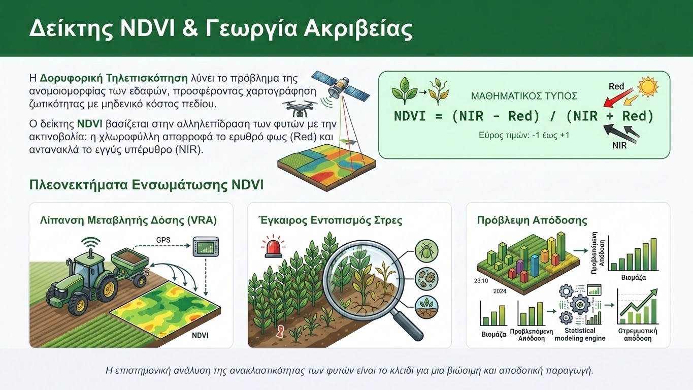

Η ανομοιομορφία των εδαφικών χαρακτηριστικών και η χωρική παραλλακτικότητα εντός ενός αγροτεμαχίου αποτελούν θεμελιώδη δεδομένα στη σύγχρονη γεωργική πράξη. Παραδοσιακά, η λίπανση εφαρμοζόταν ομοιόμορφα σε όλη την έκταση του χωραφιού, οδηγώντας συχνά σε υπερλίπανση ορισμένων ζωνών και υπολίπανση άλλων. Η σύγχρονη Αγροτική Τεχνολογία λύνει αυτό το πρόβλημα μέσω της Δορυφορικής Τηλεπισκόπησης (Remote Sensing), προσφέροντας εργαλεία για τη χαρτογράφηση της ζωτικότητας των καλλιεργειών με μηδενικό κόστος πεδίου.
Το σημαντικότερο και πιο ευρέως χρησιμοποιούμενο εργαλείο σε αυτή την προσέγγιση είναι ο Κανονικοποιημένος Δείκτης Διαφοράς Βλάστησης (NDVI - Normalized Difference Vegetation Index). Ο δείκτης αυτός βασίζεται στον τρόπο με τον οποίο τα φυτά αλληλεπιδρούν με την ηλιακή ακτινοβολία. Η υγιής χλωροφύλλη απορροφά έντονα το ορατό ερυθρό φως (Red band) για να εκτελέσει τη φωτοσύνθεση, ενώ αντανακλά ισχυρά το εγγύς υπέρυθρο φως (Near-Infrared, NIR) για να αποφύγει την υπερθέρμανση των ιστών.

Ο μαθηματικός τύπος για τον υπολογισμό του δείκτη είναι: NDVI = (NIR - Red) / (NIR + Red). Οι τιμές του κυμαίνονται από -1 έως +1. Στις καλλιέργειες, τιμές κοντά στο 0 υποδηλώνουν γυμνό έδαφος ή μη ζωτική βλάστηση, ενώ τιμές από 0.6 έως 0.9 φανερώνουν πυκνή, υγιή και αναπτυγμένη φυλλική επιφάνεια. Αναλύοντας πολυφασματικές εικόνες από δορυφόρους ελεύθερης πρόσβασης (όπως οι Ευρωπαϊκοί Sentinel-2 ή οι Αμερικανικοί Landsat), οι γεωπόνοι μπορούν να δημιουργήσουν χάρτες ζωτικότητας σε πραγματικό χρόνο.
Τα πλεονεκτήματα της ενσωμάτωσης του NDVI στη διαχείριση των καλλιεργειών είναι επιστημονικά τεκμηριωμένα:
- Λίπανση Μεταβλητής Δόσης (VRA): Οι χάρτες NDVI μετατρέπονται σε χάρτες συνταγής λίπανσης. Τα μηχανήματα του τρακτέρ, καθοδηγούμενα από GPS, εφαρμόζουν την ακριβή ποσότητα αζώτου που απαιτείται σε κάθε ζώνη, μειώνοντας τις απώλειες λόγω έκπλυσης.
- Έγκαιρος Εντοπισμός Στρες: Μια ξαφνική πτώση των τιμών του δείκτη NDVI σε συγκεκριμένο σημείο του αγρού προειδοποιεί για πιθανή προσβολή από εχθρό ή ασθένεια, τροφοπενία, ή ελλιπή άρδευση, προτού τα συμπτώματα γίνουν ορατά δια γυμνού οφθαλμού.
- Πρόβλεψη Απόδοσης: Η συσχέτιση των διαχρονικών τιμών του δείκτη με τη συσσώρευση βιομάζας επιτρέπει την ανάπτυξη έγκυρων προγνωστικών μοντέλων για την τελική στρεμματική απόδοση.
Η Τηλεπισκόπηση και ο δείκτης NDVI εκδημοκρατίζουν τη Γεωργία Ακριβείας, καθώς δίνουν πρόσβαση σε προηγμένα ψηφιακά δεδομένα ακόμη και σε μικροκαλλιεργητές. Η επιστημονική ανάλυση της ανακλαστικότητας των φυτών αποτελεί το κλειδί για μια βιώσιμη, οικονομικά αποδοτική και περιβαλλοντικά υπεύθυνη γεωργική παραγωγή.